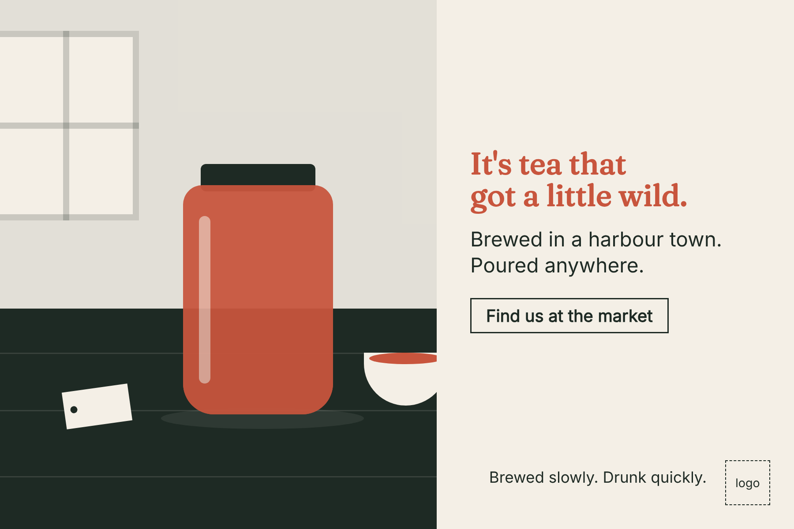

What to look at, what to answer
- Read the failures first, then the judge's notes: they are advice, not a gate.
- Answer: keep, or again with what is wrong (it is remembered).

10 pass · 1 warn · 0 fail · 0 major judge notes
Mechanical checks
| pass | palette | every colour is a brand colour |
| pass | fonts | every font is a brand font |
| pass | contrast | headline #c8553d on #f4efe6: contrast 3.8:1 (large text needs 3:1) |
| pass | headline colour | headline is #c8553d, the brand's headline colour |
| pass | length | headline is 7 word(s) |
| pass | never | none of the brand's never-words appears |
| pass | hierarchy | headline 69px, subline 46px |
| pass | cta | the call to action does not repeat the subline |
| pass | image | a generated or provided image is used |
| warn | logo | logo placeholder: drop the logo file in and set `logo: <path>` |
| pass | slogan | the slogan is the brand's exact words |
The judge's notes (never blocking)
- minor The cup on the right is cut by the edge of the text panel: shift the crop or move the cup left in the still life.
- minor The headline fills only the top of the panel's middle band and the panel feels empty below the call to action; a larger headline would use the space.
- minor The logo placeholder is a dashed square in the corner: fine as a stand-in, but the piece is not final until the real logo is dropped in.
- The image answers the headline: one jar of amber tea, no people, daylight, and the panel does not cover any of it.
- No second reading in the headline or the subline: "got a little wild" stays on the tea, "Poured anywhere" was chosen over "Drunk anywhere", which a fermented drink cannot afford.
Decision
# Decision - verdict: keep - words: Plain and friendly; the call to action is the verb. Ship it to the market stall. - date: 2026-10-23 - variant: v2 - headline: It's tea that got a little wild.